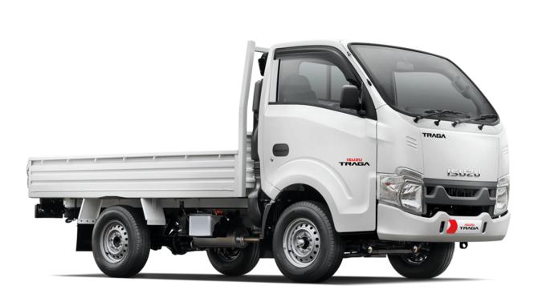
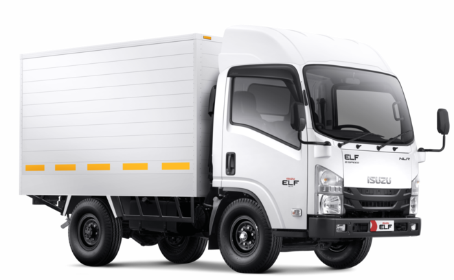
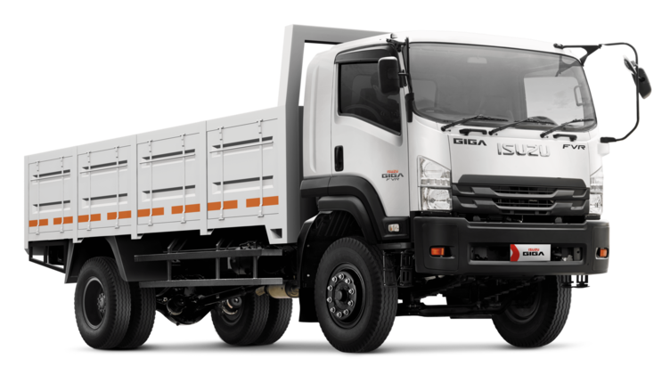

Berbagai pilihan kendaraan niaga sesuai kebutuhan bisnis

Pick up tangguh untuk distribusi ringan dan usaha UMKM.

Light truck efisien untuk operasional harian dan logistik kota.

Medium & Heavy Duty Truck untuk kebutuhan proyek dan distribusi besar.
Performa kuat dan efisiensi bahan bakar untuk bisnis jangka panjang.
Didukung jaringan resmi dan ketersediaan suku cadang.
Pilihan pembiayaan fleksibel sesuai kebutuhan perusahaan.
Tersedia berbagai pilihan karoseri seperti box, bak terbuka, wingbox, dump truck, tangki, dll.
Raka siap membantu memilih unit yang paling sesuai dengan kebutuhan bisnis Anda secara transparan dan profesional.
Dilayani langsung oleh Raka sebagai sales consultant Isuzu Jakarta.
Silakan unduh daftar harga terbaru kendaraan niaga Isuzu
Klik tombol di bawah untuk mengunduh daftar harga terbaru unit Isuzu.
Download PricelistHubungi Sales Raka untuk mendapatkan informasi harga terbaru dan promo yang tersedia.
Chat WhatsAppTemukan jawaban atas pertanyaan yang paling sering diajukan mengenai pembelian kendaraan Isuzu.
Harga Isuzu Traga dapat berbeda tergantung tipe, wilayah, dan promo yang sedang berlangsung. Silakan hubungi Sales Raka untuk mendapatkan penawaran harga terbaru.
Ya. Kami melayani pembelian tunai maupun kredit dengan berbagai pilihan leasing, tenor yang fleksibel, serta proses pengajuan yang mudah.
Tentu. Kami melayani pembelian satuan maupun fleet untuk perusahaan, instansi pemerintah, UMKM, dan berbagai kebutuhan bisnis lainnya.
Ya. Tersedia berbagai pilihan karoseri seperti bak terbuka, box aluminium, box besi, wingbox, dump truck, tangki, freezer, ambulans, dan lainnya sesuai kebutuhan usaha Anda.
Anda dapat mengunduh pricelist melalui website atau menghubungi Sales Raka melalui WhatsApp untuk mendapatkan daftar harga serta informasi promo terbaru.
Untuk beberapa tipe kendaraan dan wilayah tertentu tersedia fasilitas test drive. Silakan hubungi kami untuk informasi jadwal dan ketersediaannya.
Kami berkomitmen memberikan pelayanan terbaik kepada setiap pelanggan Astra Isuzu Jakarta.
Sales sangat membantu dalam memilih unit yang sesuai dengan kebutuhan usaha serta menjelaskan spesifikasi kendaraan dengan jelas.
Proses konsultasi, pengajuan pembelian, hingga pengiriman kendaraan dilakukan dengan cepat dan komunikatif.
Kami selalu mengutamakan pelayanan yang jujur, transparan, dan memberikan solusi terbaik sesuai kebutuhan pelanggan.
Website ini dikelola oleh Raka, Sales Consultant Resmi Astra Isuzu Jakarta. Melayani penjualan unit kendaraan niaga Isuzu untuk area Jakarta dan sekitarnya. Kami siap membantu pemilihan unit sesuai kebutuhan usaha Anda dengan proses yang transparan dan profesional.
Raka – Sales Astra Isuzu Jakarta
Cabang: Astra Isuzu Sunter (Head Office)
Jl. Danau Sunter Utara Blok O3 Kav.30 Sunter II, Jakarta Utara
WhatsApp: 081377007273
Kunjungi Astra Isuzu Sunter atau hubungi Sales Raka untuk konsultasi kendaraan niaga Isuzu.
Website Astra Isuzu Jakarta – Sales Raka berkomitmen untuk melindungi privasi pengunjung. Kami tidak mengumpulkan informasi pribadi tanpa persetujuan Anda.
Informasi yang Anda kirimkan melalui WhatsApp akan digunakan hanya untuk keperluan konsultasi dan penawaran produk kendaraan Isuzu. Kami tidak membagikan data pribadi Anda kepada pihak ketiga tanpa izin.
Website ini dapat menggunakan layanan pihak ketiga seperti penyedia hosting dan layanan analitik untuk meningkatkan kualitas layanan. Dengan menggunakan website ini, Anda dianggap menyetujui kebijakan privasi ini.
Jika Anda memiliki pertanyaan terkait kebijakan privasi, silakan hubungi kami melalui WhatsApp yang tersedia di website ini.
{kind=link}